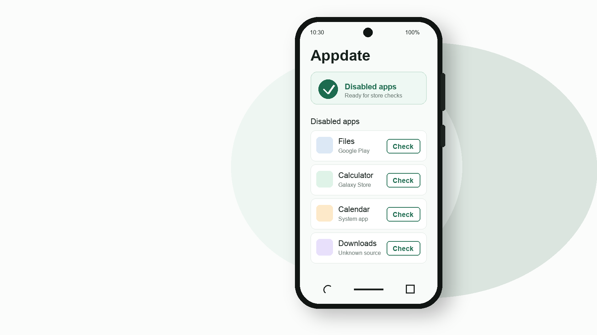

Scan disabled apps
Uses Android package visibility APIs to find apps with disabled user, system, or default states.
Find disabled Android apps and jump straight to Play Store, Galaxy Store, app info, or uninstall flows without re-enabling them first.
Current local build. Store availability is checked inside Play Store or Galaxy Store.

Appdate lists disabled packages locally, then opens system-owned destinations where Play Store, Galaxy Store, or Android settings can complete update or removal actions.
Uses Android package visibility APIs to find apps with disabled user, system, or default states.
Opens the app’s Play Store or Galaxy Store page so the store can show whether an update is available.
Routes to Play Store, Galaxy Store, app info, or Android’s uninstall screen.
Android does not let ordinary apps silently update or uninstall other packages. Appdate keeps the disabled state untouched and lets the operating system or store complete sensitive actions.